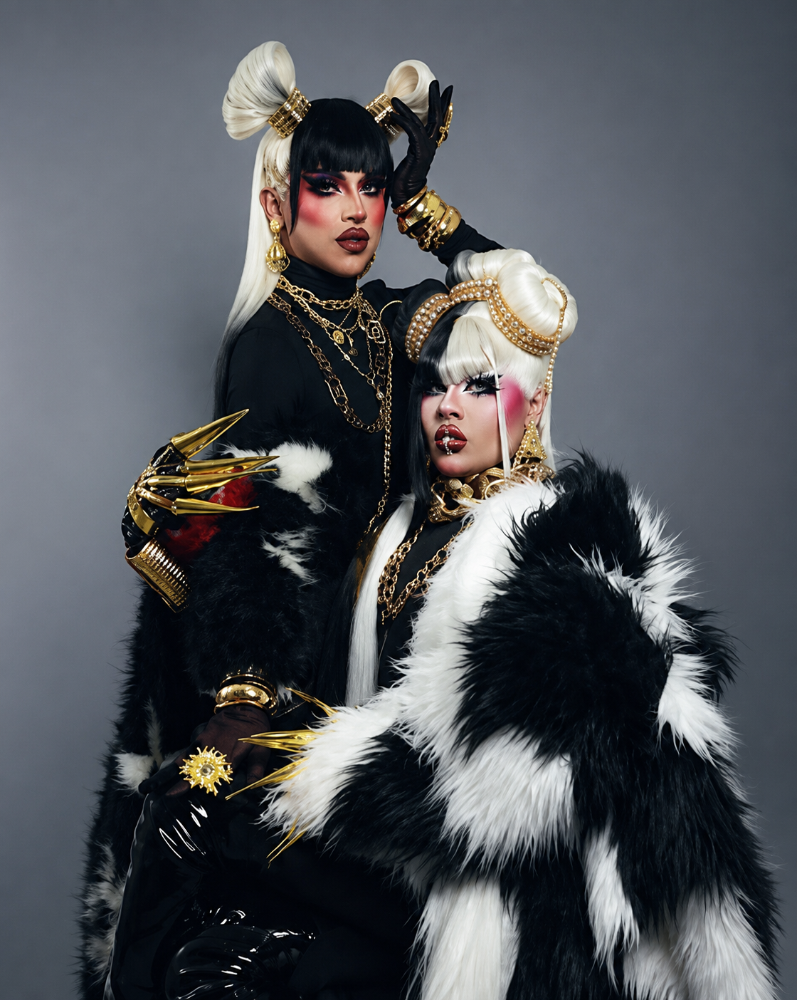

Identidad Visual y Alta Fantasía
Bienvenidos a Cpher & Aviesc, un estudio colectivo de diseño donde la alta costura, la caracterización digital y el surrealismo oscuro convergen. Nos enfocamos en la creación de narrativas visuales de gran formato que desafían las convenciones tradicionales del diseño e indagan en la belleza de lo alternativo.
A través de la manipulación tipográfica, la experimentación textil y el diseño de personajes fantásticos, estructuramos universos visuales únicos tanto para el entorno editorial como para el performance artístico.
